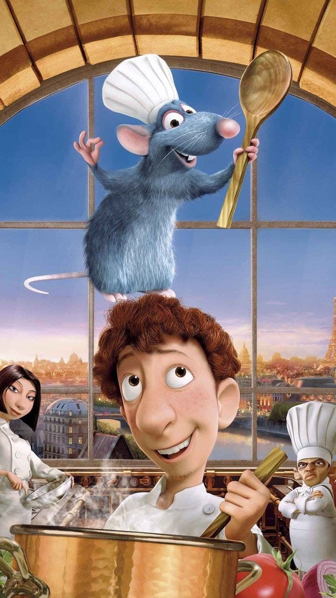
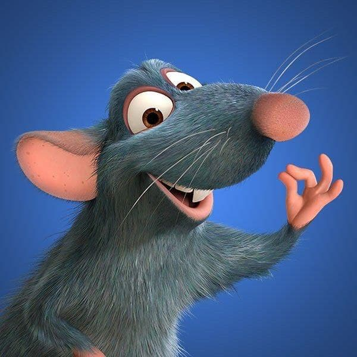

Рататуй (2007)
Идея создания мультфильма пришла в голову чешскому сценаристу по имени Ян Пинкава. Однако развитие история получила только под руководством режиссёра-мультипликатора Брэда Бёрда. Создатели мультфильма много работали над подготовкой проекта. Чтобы ощутить атмосферу Парижа, творческая группа совершила путешествие во Францию. Аниматоры осматривали город, заглянули в канализационную систему и магазин крысиного яда.
Кроме того, аниматоры Pixar работали вместе с шеф-поваром Томасом Келлером в его ресторане «Французская прачечная» для того, чтобы научиться искусству приготовления пищи. Келлер также озвучил одного из посетителей ресторана «У Гюсто». Чтобы создать реалистичный вид мусорной кучи, художники сфотографировали и исследовали реальные продукты гниения. Пятнадцать различных видов продуктов, таких как яблоки, ягоды, бананы, грибы, апельсины, брокколи и салат, были оставлены гнить, после чего их сфотографировали. В ходе начального дизайна персонажей скульптор создал девять глиняных скульптур Реми. Для создания персонажей-крыс создателям пришлось повозиться с живыми крысами для изучения их повадок.
Крысёныш Реми обожает готовить. Он смотрит кулинарные шоу и вечно выискивает интересные приправы для еды. Конечно же, сородичи относятся к его увлечениям неодобрительно. Однажды Реми знакомится с юношей Лингвини, который работает в ресторане, но совершенно не умеет готовить. И оказывается, что эти двое могут помочь друг другу.
И снова аниматоры решили полностью погрузить зрителя в атмосферу. Для этого они отправились в Париж, где и происходит действие мультфильма, и осмотрели не только улицы города, но и канализацию. Кроме того, создатели «Рататуя» поработали с шеф-поваром ресторана «Французская прачечная» Томасом Келлером, обучаясь готовке. А ещё они консультировались со специалистами по крысам и наблюдали за повадками грызунов, чтобы Реми двигался максимально правдоподобно.
СМОТРЕТЬ ТРЕЙЛЕР СМОТРЕТЬ МУЛЬТФИЛЬМ